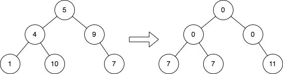
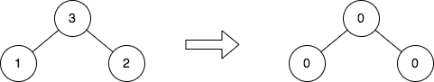

| Category | Difficulty | Likes | Dislikes |
|---|---|---|---|
| Algorithms | Medium | 1206 | 54 |
hash-table | tree | depth-first-search | breadth-first-search | binary-tree
amazon | google
Given the root of a binary tree, replace the value of each node in the tree with the sum of all its cousins' values.
Two nodes of a binary tree are cousins if they have the same depth with different parents.
Return the root of the modified tree.
Note that the depth of a node is the number of edges in the path from the root node to it.
Example 1:

Input: root = [5,4,9,1,10,null,7]
Output: [0,0,0,7,7,null,11]
Explanation: The diagram above shows the initial binary tree and the binary tree after changing the value of each node.
- Node with value 5 does not have any cousins so its sum is 0.
- Node with value 4 does not have any cousins so its sum is 0.
- Node with value 9 does not have any cousins so its sum is 0.
- Node with value 1 has a cousin with value 7 so its sum is 7.
- Node with value 10 has a cousin with value 7 so its sum is 7.
- Node with value 7 has cousins with values 1 and 10 so its sum is 11.Example 2:

Input: root = [3,1,2]
Output: [0,0,0]
Explanation: The diagram above shows the initial binary tree and the binary tree after changing the value of each node.
- Node with value 3 does not have any cousins so its sum is 0.
- Node with value 1 does not have any cousins so its sum is 0.
- Node with value 2 does not have any cousins so its sum is 0.
Constraints:
[1, 105].1 <= Node.val <= 104